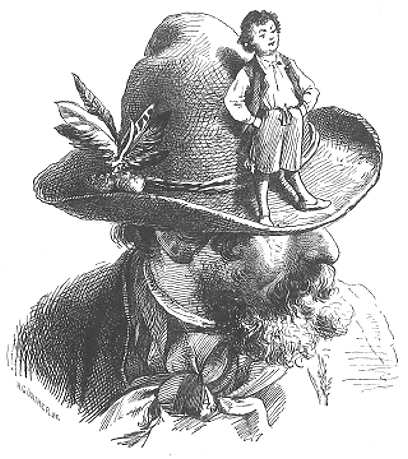

Rezumat
Au fost odată un ţăran sărac şi femeia lui.Mereu oftau că nu au copii. Femeia spunea chiar că s-ar mulţumi şi cu un copilaş cât degetul. Că l-ar iubi din toată inima. Până la urmă rămase grea. Ea aduse pe lume un băieţel mic cât un degeţel. Unii povestesc că părinții Degețel l-au şi numit. Alții spun că i-au zis Prichindel. Băiatul mânca zdravăn, dar nu a crescut deloc. A rămas atât cât era când s-a născut. Numai mintea îi creştea, de se minunau toţi ce isteţ era. Odată, ţăranul voi să plece la pădure după lemne. Zise încet, ca pentru el, că ar fi fost bine dacă ar fi avut cine să vină după el cu căruţa. Degeţel auzi şi spuse că va veni el, spre marea mirare a tatălui său. Acesta se învoi până la urmă să încerce o dată, să vadă ce o ieşi, apoi plecă la pădure. La vremea cuvenită, mama înşeuă calul. Degetel se strecură în urechea acestuia şi porni să îl îndemne la mers. Calul îl ascultă şi porni ca vântul. După o vreme trecură pe lângă doi oameni care se mirară cum de merge calul singur şi se luară după el. La pădure, tatăl lui Degeţel scoase băiatul din urechea calului.Atunci cei doi înţeleseră cine mâna calul. Cei doi erau dornici să arate minunăția prin bâlciuri şi să câştige bani grei. Ei îi cerură ţăranului să li-l vândă pe băiat. La început acesta nu se îndură. Degeţel îi şopti în ureche să-l vândă, că se întoarce el înapoi.Tatăl său îl vându pe un preţ bun. Plecară cei doi oameni, punându-l pe Degetel pe marginea pălăriei unuia dintre ei. După un timp, isteţul ceru să îl dea jos, că are o nevoie.Cum îl puseră pe pământ, se ascunse într-o gaură de şoarece. Încercară ei să-l scoată de acolo, dar în zadar.Cum venise şi noaptea, plecară de acolo negri de supărare.Degeţel rămase să doarmă acolo. Deodată, auzi alţi doi oameni care se sfătuiau cum să facă să fure banii şi argintăria popii. Degeţel, care avea planul lui, le strigă că îi ajută el. Ajunseră la casa popii. Băiatul se strecură în cămară şi începu să strige tare.Chipurile îi întreba dacă vor să ia tot ce era acolo. Bucătăreasa, care dormea în odaia vecină, auzi. Se duse să vadă ce o fi în cămară. Hoţii o luară la sănătoasa. Degeţel se strecură în şură şi se culcă în fân. Dimineaţă slujnica dădu vacii să mănânce tocmai fânul în care dormea dus băiatul.Acoperit cu fânul pe care vaca îl înghiţea, el fu rostogolit prin gura şi pântecele vacii. Degeţel începu să strige să nu îi mai dea fân. Speriată, slujnica îi spuse popii. Acesta se sperie şi el când veni şi auzi vocea lui Degetel.Socotind că a intrat vreun duh necurat în vacă, dădu poruncă să fie tăiată imediat. Stomacul, în care se afla Degeţel, îl aruncară la gunoi şi băiatul începu să se zbată să iasă afară. Dar necazurile lui nu se sfârşiseră. Un lup flămând înghiţi rămăşiţele, cu tot cu Degeţel. Din burta vacii, băiatul se trezi în burta lupului. Isteţul nu se sperie. Îi strigă lupului că îi arată el un loc unde e mâncare multă şi aleasă. Îl îndrumă spre casa părinţilor lui. Acolo îi arătă o intrare mititică, ce ducea drept în cămară. Lupul se strecură cu chiu cu vai şi se puse pe mâncat. Înfulecă tot ce găsi şi, când nu mai putu, voi să iasă afară. Dar burdihanul cel umflat îl împiedică să iasă pe unde intrase. Atunci Degeţel începu să ţipe din toate puterile. Tată-său îl auzi, veni iute şi veni de hac lupului, scoţând repede băiatul afară. Degetel le povesti părinţilor toate întâmplările prin care trecuse. Spuse apoi că nu va mai pleca niciodată de acasă. Părinţii, bucuroşi că se reîntorsese,îl îmbrăţişară cu drag.
